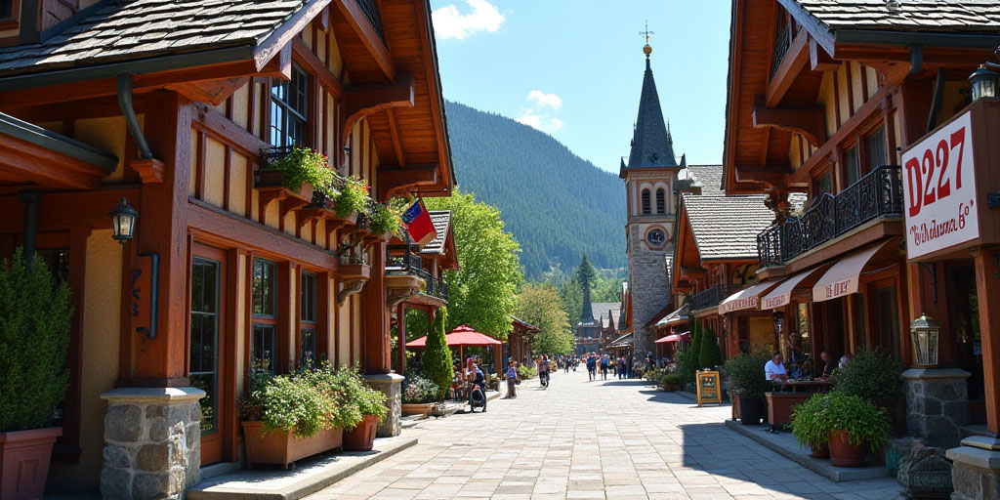
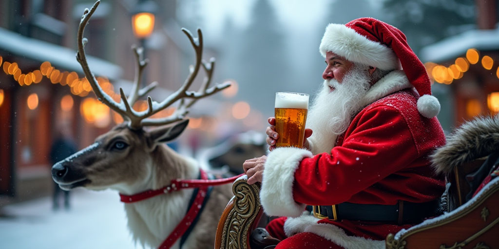

Leavenworth - A Bavarian Wonderland
Up in the beautiful snowy Cascade Mountains, Leavenworth is a small town like no other. Known for Bavarian architectural style and culture, this captivating getaway town offers much joy and celebration.
Captivating mountain views surround the city, Leavenworth is a destination that feels like stepping into a storybook. Visitors come from near and far to getaway from reality and step into a wonderland of enjoyable festivals, nature trails, and hidden gems.
Discovering Leavenworth
More than a normal town, it's an experience to cherish for a lifetime. From its famous Oktoberfest to the magical Christmas festivies. Whether you're visiting during the snowy winter months or the sunny seasons, Leavenworth is a beauty to enjoy year-round!
A perfect getaway that's not far from the hectic buzz of the city, step into a into a place of bliss when visiting Leavenworth. It's a picture perfect town that leaves lasting memories and endless relaxation while you're here.
Visit Leavenworth.org for more info